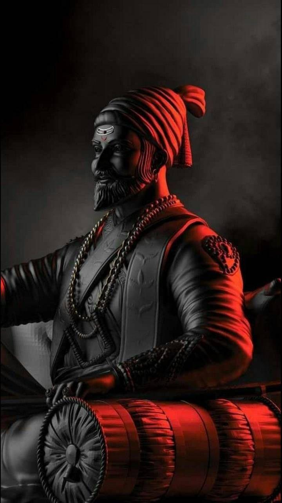

The Great Leader Ever
Chhatrapati Shivaji Maharaj was the founder of the Maratha Empire. Shivaji Bhonsale was born in the Shivneri Fort in Maharashtra on 19 February 1630 to mother Jijabai and father Shahaji Bhonsale. It is said that mother Jijabai prayed to Lord Shiva in Shivneri Fort for a brave son and kept her son name as Shivaji after the Hindu god Shiva. Shivaji Maharaj is one of the revered historical figures of Maharashtra. He created an independent and sovereign state in the Maharashtra region. In course of time, his prominence in the political sphere of Maharashtra, as a cultural icon of Marathi pride.Shivaji was born at the Shivneri fort near Junnar in Pune district on 19th February 1630. Shivaji’s mother, Jijabai was the daughter of Lakhuji Jadhavrao of Sindkhed. His father Shahaji Bhonsale was a prominent sardar in the Deccan. He worked under the local Deccan sultanates. At the time of Shivaji's birth, most of the territory in Maharashtra was under the possession of the Nizamshah of Ahmednagar and the Adilshah of Bijapur who were known as the Deccan sultanates.

| Name: | Shivaji Bhonsle |
|---|---|
| DOB: | 19 February, 1630 |
| Birthplace: | Shivenri Fort, Pune |
| Parents: | Shahaji Bhonsle (Father) and Jijabai (Mother) |
| Spouse: | Saibai, Soyarabai, Putalabai, Sakvarbai, Laxmibai, Kashibai |
| Death: | 3 April, 1680 |
Chhatrapati Shivaji Maharaj was the founder of the Maratha Empire in western India. He is considered to be one of the greatest warriors of his time and even today, stories of his exploits are narrated as a part of the folklore. With his valor and great administrative skills, Shivaji Maharaj carved out an enclave from the declining Adilshahi sultanate of Bijapur. It eventually became the genesis of the Maratha Empire. After establishing his rule, Shivaji Maharaj implemented a competent and progressive administration with the help of a disciplined military and well-established administrative set-up.